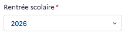
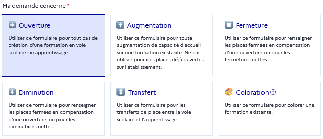
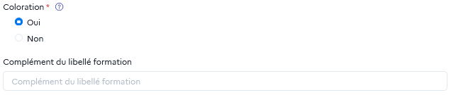
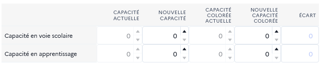

Type de demande
Il faut renseigner dans cette section :
- Rentrée scolaire⚓
Par défaut, il s’agit de la rentrée pour l’année suivante (ex : si on saisit la demande en 2025, elle porte par défaut sur la rentrée scolaire 2026). On peut choisir
une rentrée ultérieure ou la rentrée de la même année, dans le cas d’un ajustement. - Type de transformation⚓
À définir parmi les options suivantes :
Ouverture: création d’une formation ;Augmentation: augmentation de capacité d’une formation existante dans l’établissement, avec ou sans coloration et/ou changement de voie ;Fermeture: suppression totale d’une formation, en compensation de places ouvertes ou non ;Diminution: diminution de capacité d’une formation, avec ou sans coloration et/ou changement de voie, en compensation de places ouvertes ou non ;Transfert: transfert de places entre voie scolaire et apprentissage, au sein du même établissement, sans changement de capacité ;Coloration: coloration de places existantes dans une formation, sans changement de capacité.
Attention : Ne pas confondre⚓
Pour les demandes de type « Ouverture » et « Fermeture » il s’agit bien d’ouvrir des formations non présentes dans l’établissement (ou fermer complètement des formations).
Les cas d’ouverture/fermeture de classes sur des formations existantes relèvent quant à eux de demandes de type augmentation/diminution.
- Coloration⚓
Si la demande porte sur un changement de capacité ou de voie (on a alors sélectionné « ouverture », « augmentation », « diminution » ou « transfert ») associé à de la coloration de tout ou partie des places, cocher
Ouià la question « Coloration ». On doit alors précisez (en toutes lettres) lecomplément du libellé de formationdésignant cette coloration. Si on demande plusieurs colorations sur la même formation, on peut les regrouper dans la même demande en renseignant l’ensemble des libellés de coloration et le cumul des capacités des places colorées.Attention : Ne pas confondre⚓
Ne pas confondre avec le type de demande « Coloration », qui désigne dans Orion les colorations à capacité constante.
- Changement de capacité⚓
Cas 1 : Demande sans coloration⚓
Si la demande n’inclut pas de coloration, on renseigne dans la première colonne la
capacité actuelle totale de la formation(nulle si ouverture), et dans la deuxième lanouvelle capacité totale demandée(nulle si fermeture). L’écart (troisième colonne) sera automatiquement renseigné. On peut accompagner le changement de capacité d’un transfert de voies en répartissant la nouvelle capacité entre les places « Voie scolaire » et « Apprentissage » telles que souhaitée post-transformation.Remarque : Nouvelle capacité⚓
« Nouvelle capacité » désigne bien la capacité totale souhaitée pour la formation post-transformation, et pas seulement le nombre de places ouvertes ou fermées (qui apparaît, lui, automatiquement dans « Écart »).
Exemple : Avec une formation de 10 places, si on souhaite en ouvrir 5, on renseigne donc « 15 » (=10+5) dans la colonne « Nouvelle capacité ».
Cas 2 : Demande avec coloration⚓
Les deux premières colonnes (
Capacité actuelleetNouvelle capacité) servent à renseigner le changement de capacité totale : elles sont à renseigner comme dans le cas précédent, indépendamment de la coloration, et la différence entre les deux sera visible dans la colonne « Écart » ;Les colonnes
Capacité colorée actuelleetNouvelle capacité coloréeservent à indiquer la variation du nombre de places colorées, indépendamment des changements de capacité totale. Il est ainsi possible de diminuer la capacité totale tout en augmentant le nombre de places colorées ;Dans le cas d’une formation mixte voie scolaire/apprentissage, on peut répartir les capacités entre les deux voies, y compris pour renseigner en même temps un transfert de capacité d’une voie vers une autre (ou l’ouverture d’une voie apprentissage qui n’était pas encore proposée par exemple).
Remarque : Nouvelle capacité & nouvelle capacité colorée⚓
« Nouvelle capacité » et « Nouvelle capacité colorée » désignent bien les totaux souhaités post-transformation pour la capacité totale et la capacité colorée. Il ne s’agit pas seulement des places sur lesquelles porte la transformation (ouverture, fermeture ou coloration).
Comme sur l’exemple ci-dessus :
On a une formation de 100 places (capacité actuelle), dont 20 colorées (capacité colorée actuelle) ;
On souhaite fermer 25 places, mais en même temps en colorer 10 de plus ;
On renseigne donc « 75 » (=100-25) dans la colonne « Nouvelle capacité » et « 30 » (=20+10) dans la colonne « Nouvelle capacité colorée ».